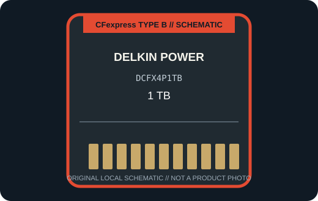

[ REMOVABLE MEDIA // PRODUCT RECORD ]
Delkin POWER CFexpress Type B 4.0 1 TB (DCFX4P1TB)
The 1 TB DCFX4P1TB is Delkin’s POWER-series CFexpress Type B 4.0 card; this record is for the card only, not its optional reader. This entry describes the removable card only; the camera or reader is separate.

MEDIA ONLY: Delkin POWER CFexpress Type B 4.0 1 TB (DCFX4P1TB). Capacity, interface generation, and compatibility refer to this model and not other cards in the same family.
Capacity, interface and compatibility
| Manufacturer model | DCFX4P1TB; CFexpress 4.0 Type B, POWER series |
|---|---|
| Nominal capacity | 1 TB. Usable space varies with formatting and system-reserved capacity. |
| Interface | PCIe 4.0 Type B; a PCIe 4.0-capable host/reader is required for the card’s top rates. |
| Performance | Delkin lists up to 3,650 MB/s read, 3,240 MB/s write, and up to 1,570 MB/s minimum sustained sequential write for the POWER 4.0 family. Actual operation is bounded by the camera or reader. |
| Host compatibility | A supported CFexpress Type B camera or reader, with firmware and capacity support confirmed by the host manufacturer. Older Type B hosts may not offer CFexpress 4.0 performance. |
| Write protection | No physical card-level write-protect switch is specified for this model; use host controls and verified backups. |
| Model-specific note | The stated high-speed ceiling is associated with CFexpress 4.0 and a compatible host/reader; the 1 TB model is DCFX4P1TB, not the earlier 512 GB POWER record. |
Handling and preservation
No finite shelf-life or archival-life guarantee is claimed here. Keep the card clean, dry, labeled, and in its protective case; avoid touching contacts and never remove it during a write. After use, verify files and maintain multiple checksummed copies on independent media. Before a migration or recovery, record the exact card SKU, camera/reader, firmware, filesystem, and host.
Sources and standards
- Delkin Devices — POWER CFexpress Type B 4.0 cardsManufacturer product information for the named series or exact model; confirm SKU and host notes.
- CompactFlash Association — CFexpress 4.0 announcementAssociation announcement describing the CFexpress 4.0 physical and logical specification generation.
- CompactFlash Association — CFexpress card typesStandards reference for card form factors; not a substitute for device-specific compatibility.
- Library of Congress — Digital preservation formatsIndependent preservation planning reference for removable digital media.
Manufacturer data apply to the specific product generation shown. Standards define the format family; the camera and reader manuals govern host compatibility.